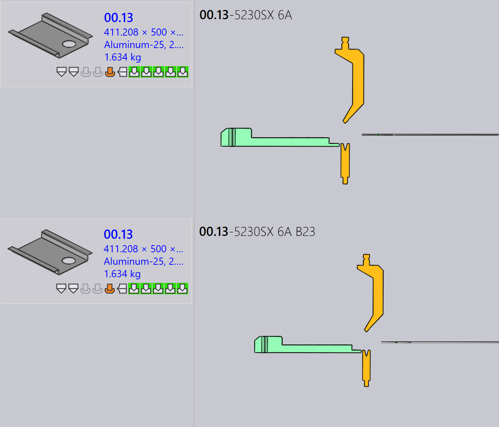
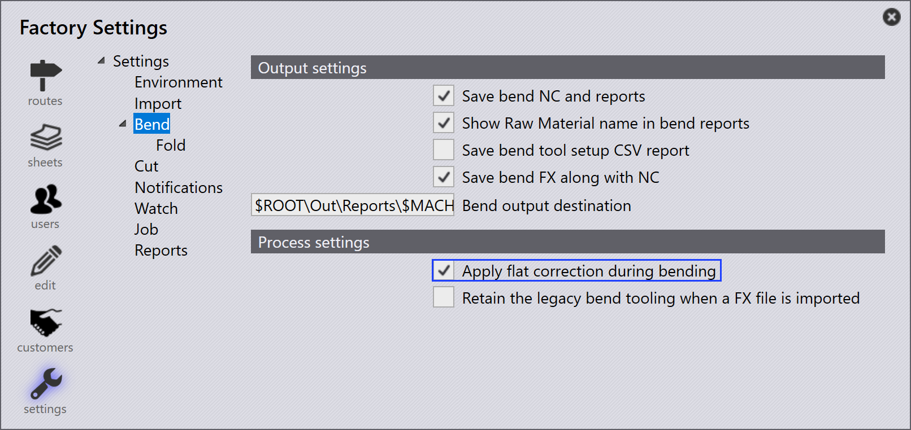

Työkalutuspaneeli
Tässä osiossa selitetään työkalutukseen liittyviä toimintoja, kuten Vie tulostetiedot, Check Tooling, Ohita työstö, Aseta peruslevitykseksi…, Kopioi työstö… ja muita vaihtoehtoja, joita käytetään työkalutusinstanssien hallintaan.

|
|


Vie tulostetiedot
Tämä vaihtoehto vie osan tulosteen kohteeseen, joka on määritetty Tehdasasetukset -kohdassa. (Katso Bend Settings ja Cut Settings)

Vain valittuun työkalutustoimintoon liittyvät työkalutukset viedään, ei koko osaa.
| Viedyt tiedostot riippuvat toimintotyypistä. Taivutus- ja paneelitaivutustoiminnoille luodaan NC-tiedostot ja raportit. Leikkaus- ja reikäleikkaustoiminnoille viedään vain osatiedostot. |
Check Tooling
-
Jos CAM-asetuksissa on muutos tai taivutustyökalu on kadonnut, sinun ei tarvitse työkaluttaa osaa uudelleen.
-
Sen sijaan käytä Check Tooling -toimintoa validoidaksesi olemassa olevan työkalutuksen tekemättä muutoksia.
-
Jos validointi epäonnistuu, kyseisen instanssin työkalutustila päivitetään ja liittyvät tulostiedostot poistetaan.
-
Check Tooling havaitsee myös osat, joissa virheet on aiemmin manuaalisesti ohitettu käyttämällä Ohita virheet -toimintoa, ja päivittää niiden tilan virheeksi tarvittaessa.

Kopioi työstö…
Copy tooling -toiminto mahdollistaa taivutustyökalutuksen nopean soveltamisen yhdestä ratkaisusta toisiin, säästäen aikaa ja vaivaa.
Tämä kopioi meistin, sarjan ja takavastimen asetukset valitusta viiteterätyökalutuksesta (ratkaisusta) ja yrittää soveltaa samat asetukset kaikkiin muihin ratkaisuihin.
-
Jos kopioitu asetus on toteutettavissa kohdekoneelle, se tallennetaan ja käytetään.
-
Jos asetus ei ole toteutettavissa, kyseisen koneen alkuperäinen työkalutus pysyy muuttumattomana.
Esimerkiksi, sinulla voi olla erilaisia työkalutuksia eri koneille:
-
Tässä kone 5230SX 6A käyttää joutsenkaula-meistä, kone 5085X 6A B23 käyttää terävää meistä.

Kun käytät Kopioi työstö… -toimintoa koneelle 5230SX 6A, se yrittää kopioida joutsenkaula-asetuksen kaikille muille koneille.

Sama meisti, sarja ja takavastimen asetukset sovelletaan missä mahdollista. Jos kopioitua asetusta ei voida käyttää, alkuperäinen työkalutus pysyy muuttumattomana.

Kopiointiworkkalutuksen soveltamisen jälkeen joutsenkaula-asetus on onnistuneesti sovellettu kaikille muille koneille, joissa se on toteutettavissa.
Aseta peruslevitykseksi…
Aseta peruslevitykseksi… -toiminto määrittelee, mitä taivutus- tai paneelitaivutustyökalutusta käytetään viitelevykokona leikkausratkaisujen luomista varten. Kun työkalutus merkitään Base-Flatiksi, TruSmartCAM päivittää osan levykoon kyseisen koneen perusteella ja luo leikkausratkaisut uudelleen vastaavasti. Base-Flat- työkalutukset näytetään sinisellä reunuksella käyttöliittymässä.
Eri taivutuskoneet voivat tuottaa pieniä eroja levykoossa samalle osalle. Kun asetat työkalutuksen Base-Flatiksi, TruSmartCAM käyttää kyseisen koneen levykokoa pääreferenssinä ja laskee leikkausratkaisut automaattisesti uudelleen.
Tässä voimme nähdä erilaisia levykokoja samalle osalle eri koneilla:

Tässä esimerkissä 5130X 6A B23 -työkalutus on asetettu Base-Flatiksi, ja päivitetty levykoko sovelletaan osan ominaisuuksissa:

Automaattinen base flat -valinta
Kun tehdasasetus Käytä levityksen korjausta taivutuksen aikana on käytössä:

-
TruSmartCAM asettaa automaattisesti taivutustyökalutuksen (joka sisältää maksimitaivutuspituustaulukon) Base-Flatiksi osan tuonnin aikana.
-
Jos valittu taivutustyökalutus kohtaa virheen tai ei ole toteutettavissa, TruSmartCAM älykkäästi vaihtaa ja asettaa toisen voimassa olevan taivutustyökalutuksen Base-Flatiksi. Tämä varmistaa, että levykokoon viittaus ja leikkausratkaisut pysyvät aina johdonmukaisina ja voimassa olevina ilman manuaalista puuttumista.
Parannettu base flat -hallinta
TruSmartCAM tarjoaa Base-Flat-vaihtoehdot Tallenna Praxis-ohjelmistoon -valintaikkunassa tallennettaessa taivutus- tai paneelitaivutustyökalutuksen muokkauksia. Nämä vaihtoehdot ilmestyvät vain työkalutuksille OK-tilassa ja varmistavat, että levykoko ja leikkausratkaisut pysyvät tarkoina.
Aseta peruslevitykseksi laske leikkausratkaisu
Tätä vaihtoehtoa käytetään merkitsemään työkalutus Base-Flatiksi ensimmäistä kertaa ja luomaan automaattisesti vastaava leikkausratkaisu.
Ilmestyy, kun:
-
Työkalutusta ei ole tällä hetkellä merkitty Base-Flatiksi.
-
Käyttäjä on kirjannut ulos työkalutuksen muokkausta varten ja tallentaa muutokset.

Tämän vaihtoehdon käyttämiseksi, kirjaa ulos taivutus- tai paneelitaivutustyökalutus ja tee tarvittavat muutokset, kuten muutokset taivutusparametreihin tai levykokoon. Paina Ctrl+S tallentaaksesi muutokset. Tallenna Praxis-ohjelmistoon -valintaikkunassa valitse Aseta peruslevitykseksi laske leikkausratkaisu ja napsauta OK. TruSmartCAM asettaa työkalutuksen Base-Flatiksi ja luo leikkausratkaisun käyttäen päivitettyä levykokoa.
Päivitä peruslevitys ja laske leikkausratkaisu uudelleen
Tätä vaihtoehtoa käytetään, kun työkalutus on jo merkitty Base-Flatiksi ja sitä on muokattu, edellyttäen levykoon ja leikkausratkaisujen uudelleenluomista.
Ilmestyy, kun:
-
Työkalutus on jo merkitty Base-Flatiksi.
-
Käyttäjä on kirjannut sen ulos, muokannut sitä ja tallentaa muutokset.

Kun muokkaat olemassa olevaa Base-Flat-työkalutusta, päivitä taivutusparametrit tai levykokoon geometria tarpeen mukaan. Tallenna Praxis-ohjelmistoon -valintaikkunassa valitse Päivitä peruslevitys ja laske leikkausratkaisu uudelleen. TruSmartCAM päivittää sitten Base-Flat-työkalutuksen ja luo uudelleen kaikki liittyvät leikkausratkaisut heijastaakseen viimeisimpiä muutoksia.
|
Vain yksi taivutustyökalutus voidaan asettaa Base-Flatiksi kerrallaan. Kun Base-Flat vaihdetaan, olemassa olevat leikkausratkaisut käsitellään automaattisesti uudelleen. Tämä toiminto on saatavilla sekä taivutus- että paneelitaivutustyökalutuksille TruSmartCAM-sovelluksessa. |
Luo työstöt uudelleen…
Tämä vaihtoehto käsittelee valitun työkalutuksen osalle uudelleen.
Napsauta hiiren kakkospainikkeella tarvittavaa työkalutusta työkalutuspaneelissa ja napsauta Luo työstöt uudelleen…

Vahvistusvalintaikkuna näytetään ennen jatkamista.

Napsauta Kyllä jatkaaksesi uudelleentyökalutusta tai Ei peruuttaaksesi toiminnon.
Vain valittu työkalutus työkalutetaan uudelleen. Muut osaan liittyvät työkalutukset eivät vaikuta. Valittuun työkalutukseen liittyvät olemassa olevat tulosteet poistetaan ja luodaan uudelleen uudelleentyökalutusprosessin aikana.
Käytä tätä vaihtoehtoa, kun työkalutusdata on vanhentunutta, virheellistä tai kun kone- tai työkalutuksen määrityksiä on muutettu.
Ohita virheet
-
Jos työkalutettu instanssi näyttää varoituksen, ja haluat silti jatkaa sen kanssa, voit ohittaa varoituksen napsauttamalla Ohita virheet.

-
Tämä sallii järjestelmän viedä tulostiedostoja kyseiselle instanssille, vaikka työkalutusongelmia olisikin.
| Käytä Ignore Errors -toimintoa vain, kun olet varma, että varoitus voidaan turvallisesti ohittaa. Todellisten virheiden ohittaminen voi johtaa koneen vaurioitumiseen tai turvallisuusriskeihin. |
Suppress/Unsuppress tooling
-
Kun kone ei ole käytössä tai et halua tietyn osan käsiteltävän tietyllä koneella, käytä Ohita työstö -toimintoa poistaaksesi kyseisen osan pesimästä kyseisellä koneella.

-
Poistamisen jälkeen hiiren vieminen työkalutetun instanssin päälle näyttää viestin, kuten: "Tooling suppressed by <User name> on <Date Time>".
-
Suppress tooling poistaa tulostiedoston kyseiseltä koneelta ja osalta.
-
Käytä Peruuta työstön ohittaminen -toimintoa palauttaaksesi työkalutuksen tilan osalle kyseisellä koneella.

-
Kun poisto kumotaan, vastaava tulostiedosto luodaan uudelleen.